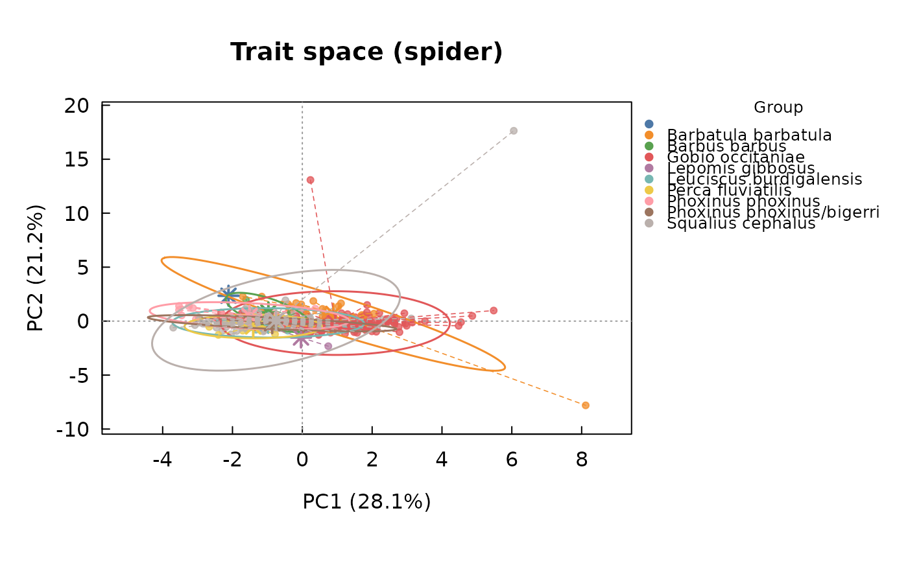

Constructs a low-dimensional functional trait space from any table of
numeric traits (e.g. the FISHMORPH ecomorphological ratios produced by
fishmorph_ratios(), or linear traits/ratios from morpho_ratios()),
by Principal Component Analysis or by metric multidimensional scaling
(Principal Coordinate Analysis) of a Euclidean distance matrix, the two
standard approaches used to build functional trait spaces in
comparative ecology (e.g. Villéger et al., 2017).
Usage
trait_space(
traits,
groups = NULL,
method = c("pca", "pcoa"),
log_transform = TRUE,
scale = TRUE,
axes = c(1, 2),
na_action = c("fail", "omit", "impute_mean", "impute_group_mean", "missforest"),
missforest_ntree = 100,
missforest_maxiter = 10,
flag_outliers = TRUE,
outlier_threshold = 3,
outlier_min_n = 5,
remove_outliers = FALSE
)
# S3 method for class 'intrait_traitspace'
print(x, ...)Arguments
- traits
A
data.frameor matrix of numeric traits, one row per specimen or species. Non-numeric columns are dropped with a warning (they are not included in the ordination, but grouping is still auto-detected from aspeciescolumn if present; seegroups). Constant (zero-variance) numeric columns are also dropped with a warning, since they carry no information for an ordination and cannot be rescaled to unit variance; this commonly happens when incidental numeric metadata (e.g. a digitization replicate counter) is carried over fromfishmorph_segments()/fishmorph_ratios()and passed totrait_space()unfiltered.- groups
Optional factor (or character vector), one value per row of
traits, used to colour/group observations when plotting. IfNULLandtraitscontains aspeciescolumn, it is used automatically.- method
Character, one of
"pca"(default, Principal Component Analysis viastats::prcomp()) or"pcoa"(Principal Coordinate Analysis / classical multidimensional scaling, viastats::cmdscale(), of a Euclidean distance matrix on the same, optionally transformed and standardised, trait data — equivalent to PCA up to an arbitrary rotation and sign).- log_transform
Logical, apply a
log10(x + 1)transformation to every numeric trait before centring/scaling and ordination. Defaults toTRUE. Ratio traits (e.g. fromfishmorph_ratios()ormorpho_ratios()) are bounded at zero and often right-skewed, so a log(x + 1) transformation (the+ 1accommodating traits that can legitimately equal zero, e.g. under the Villéger et al., 2010, exception rules) is common practice before ordination. Requires all trait values to be non-negative; set toFALSEto skip (e.g. for traits that can be negative, such as PCA scores fed back into a second ordination).- scale
Logical, standardise (centre and scale to unit variance) traits before building the trait space, after the optional log transformation (recommended when traits are on different scales or have different variances). Defaults to
TRUE.- axes
Integer vector of length 2, the ordination axes to retain for plotting. Defaults to
c(1, 2).- na_action
Character, how to handle missing values in the numeric trait columns:
"fail"(default) stops with an error, as in previous versions;"omit"removes affected rows (specimens/species) and reports how many were dropped;"impute_mean"replaces missing values with the corresponding column mean;"impute_group_mean"replaces missing values with the mean of the same trait within the same group (groups, or the auto-detectedspeciescolumn), falling back to the column mean, with a warning, for a group entirely missing a trait;"missforest"uses random-forest-based iterative imputation (missForest::missForest(), Stekhoven & Bühlmann, 2012) on the numeric trait matrix, usinggroups(when available) as an additional predictor."omit"and every imputation option print amessage()reporting the number of rows removed or values imputed (plus, for"missforest", the out-of-bag normalised RMSE of the imputation), so this is never a silent operation.- missforest_ntree, missforest_maxiter
Number of trees per forest and maximum number of iterations passed to
missForest::missForest()whenna_action = "missforest"; ignored otherwise. Default tomissForest's own defaults (100and10).- flag_outliers
Logical, screen for potential within-group (e.g. within-species) outliers – specimens unusually far from other members of their own group in the standardised trait space – and report them (see Details and
outlier_threshold/outlier_min_n). Requiresgroups(or an auto-detectedspeciescolumn); has no effect (no$outlier_screenelement, no message) if no grouping is available, since "distance from other individuals of the same species" is undefined without species labels. Defaults toTRUE. This never removes any observation: it only flags candidates for visual/manual review (e.g. withplot_landmarks()orplot_fishmorph_points()) before deciding whether an exclusion is warranted.- outlier_threshold
Numeric, the number of median absolute deviations (MAD) above a group's median within-group distance beyond which a specimen is flagged; same convention as
detect_outliers()'sthreshold. Defaults to3.- outlier_min_n
Integer, the minimum number of specimens a group must have for outlier flagging to be attempted in it; groups smaller than this still get a computed distance (in
$outlier_screen) but are never flagged (NA), since a median/MAD computed from very few points is not a reliable reference. Defaults to5.- remove_outliers
Logical, actually exclude every specimen flagged by
flag_outliersfrom the trait matrix before building the ordination (rather than only flagging them for review, the default). Requiresflag_outliers = TRUE(an error is raised otherwise, since there would be nothing to remove). Defaults toFALSE: removing specimens changes the ordination and any statistic derived from it (e.g.trait_disparity(),bootstrap_functional_space()), so this is opt-in rather than automatic, and every removal is still recorded in$removed_outliers(see Return) for transparency and reproducibility – always confirm flagged specimens genuinely reflect an error (e.g. viaplot_landmarks()/plot_fishmorph_points()) before turning this on for a given data set, rather than treating it as a default cleaning step.- x
An object of class
"intrait_traitspace", as returned bytrait_space().- ...
Currently unused.
Value
An object of class "intrait_traitspace", a list with elements
scores (data.frame of ordination scores), var_explained (percent
variance explained by the two selected axes), loadings (PCA
variable loadings, NULL for method = "pcoa"), groups, axes,
method, traits_used (names of the numeric columns used), X
(the full standardised trait matrix actually analysed, i.e. after
log-transformation, removal of constant columns, and any outlier
removal, centred/scaled as requested; used internally by
trait_disparity() so that dispersion statistics are not truncated to
the two plotting axes), and, when flag_outliers = TRUE and groups
is available, outlier_screen (a data.frame, one row per specimen
actually used in the ordination – i.e. excluding any row removed by
remove_outliers = TRUE – with columns group, n_group, distance
(to the specimen's own group centroid, in the full standardised trait
space X), median_distance, mad_distance, threshold_value, and
flagged; see Details), and removed_outliers (NULL unless
remove_outliers = TRUE removed at least one specimen, in which case
a data.frame with the same columns as outlier_screen, one row per
excluded specimen, for the record). Has a dedicated plot() method.
Invisibly returns x.
Details
By default (na_action = "fail"), rows with NA in any numeric trait
cause an error; set na_action to "omit" or one of the imputation
options to handle missing values automatically (see na_action). Mean
imputation ("impute_mean", "impute_group_mean") is a simple,
commonly used approach for small amounts of missing data in functional
trait matrices, but it shrinks the imputed trait's variance, ignores
correlations among traits, and can understate group dispersion (see
trait_disparity()). na_action = "missforest" addresses these
limitations with nonparametric random-forest imputation (Stekhoven &
Bühlmann, 2012), which uses the correlation structure among all
numeric traits (and groups, when available, as an auxiliary
predictor) to predict each missing value, and is generally preferred
over mean imputation once more than a few values are missing;
it requires the missForest package (not installed by default; see
Suggests) and is stochastic, so results vary run to run unless
set.seed() is called beforehand. If a very large fraction of values
is missing, no automated imputation method is a substitute for
reviewing the missing-data mechanism directly. This function does not
implement Gower distance for mixed (numeric and categorical) trait
tables; for mixed-trait functional spaces, standard tools such as the
mFD or FD packages should be used instead.
Note that this log-transform-then-standardise treatment applies to
trait data (ratios, linear measurements, etc.) only. It is not applied
by, and should not be applied to, morpho_space(), which ordinates
Procrustes shape coordinates: those are already a homogeneous,
size-free coordinate system in which log-transforming or rescaling
individual columns would distort shape geometry.
When flag_outliers = TRUE (the default), every specimen's Euclidean
distance to its own group's centroid is computed on the full
standardised trait matrix X (all traits, not just the two plotting
axes), and, within each group with at least outlier_min_n specimens,
flagged if that distance exceeds median + outlier_threshold * MAD
(median absolute deviation) of that group's own within-group distances
– the same robust rule used by detect_outliers(), but computed
within each group rather than pooled across the whole sample.
Pooling across species, as a naive global outlier screen would, mostly
flags genuine interspecific morphological diversity rather than
digitization or identification errors (see the worked pooled-vs-within-
species comparison in demo(pipeline_T26_saudrune)); computing this
automatically, per group, inside trait_space() removes the need to
subset by hand. A single extreme specimen in an otherwise tight species
can also visibly distort the ordination for every other group, by
inflating the axis ranges/variance explained: a species-level outlier
is therefore often the right first thing to check when a functional
space "does not look right" (widely spread groups collapsed into one
corner of the plot), before considering, e.g., a different na_action
or transformation. As with detect_outliers(), this only flags
candidates – it never removes anything automatically, since ad hoc,
undocumented removal of "bad-looking" specimens is itself a threat to
reproducibility; always inspect a flagged specimen (e.g. with
plot_landmarks()/plot_fishmorph_points(), and its original
photograph if available) before deciding whether to exclude it, and
record that decision (e.g. in a QC log, as
data-raw/t26_saudrune_prepare.R does for the bundled real data set)
rather than silently dropping rows. This is a Euclidean, not
Mahalanobis, distance (like detect_outliers()), so it does not
account for correlations among traits; it is intended as a fast,
transparent first pass, not a definitive statistical test.
Setting remove_outliers = TRUE goes one step further and actually
excludes every flagged specimen before the ordination is built (rather
than only flagging it): X, groups, and scores in the returned
object then describe the cleaned data set, and $removed_outliers
records exactly which specimens were dropped and why, so the exclusion
remains fully reproducible and auditable (e.g. reportable in a
manuscript's methods) rather than an undocumented, ad hoc edit made
before calling trait_space(). This is deliberately opt-in
(FALSE by default): removing data always changes downstream results
and should be a conscious, visually-confirmed decision (see above), not
something that happens silently just because a threshold was crossed.
References
Villéger, S., Brosse, S., Mouchet, M., Mouillot, D., & Vanni, M. J. (2017). Functional ecology of fish: current approaches and future challenges. Aquatic Sciences, 79(4), 783-801.
Examples
# real T-26 Saudrune data; na_action = "omit" is required here because,
# unlike simulate_fishmorph_points(), real specimens have some missing
# landmarks (see ?load_t26_saudrune_landmarks)
fish <- load_t26_saudrune_landmarks()
segments <- fishmorph_segments(fish)
#> Warning: 3 specimen(s) have a zero-length or missing scale bar (points 20-21); their segments will be NA.
ratios <- fishmorph_ratios(segments)
ts <- trait_space(ratios, groups = fish$metadata$species, na_action = "omit")
#> Warning: Dropping non-numeric column(s) from the ordination: specimen, individual, species, population, operator
#> na_action = "omit": removing 230 row(s) out of 558 with missing values.
#> flag_outliers: 21 specimen(s) flagged as within-group outlier(s) across 5 group(s) (Barbatula barbatula, Gobio occitaniae, Leuciscus burdigalensis, Phoxinus phoxinus/bigerri, Squalius cephalus); this only flags candidates for review (e.g. with plot_landmarks()/plot_fishmorph_points()), nothing was removed automatically. Set remove_outliers = TRUE to exclude them from the ordination, or see $outlier_screen for details.
#> flag_outliers: 2 group(s) have fewer than outlier_min_n = 5 specimens and were not screened (distance still reported, flagged = NA).
ts # flags any within-species outliers found, see ts$outlier_screen
#> <intrait_traitspace> (pca)
#> Axes PC1/PC2, variance explained: 28.1% / 21.2%
#> 328 observations, 10 traits (replicate, BEl, VEp, REs, OGp, RMl, BLs, PFv, PFs, CPt)
#> 10 groups
#> 21 potential within-group outlier(s) flagged (see $outlier_screen); most atypical:
#> T-26-0052_Operator_1 (Squalius cephalus): distance = 20.889 (group median 2.196)
#> T-26-0050_Operator_2 (Gobio occitaniae): distance = 16.687 (group median 1.901)
#> T-26-0230-1_Operator_2 (Barbatula barbatula): distance = 14.075 (group median 2.237)
#> T-26-0012_Operator_2 (Gobio occitaniae): distance = 8.386 (group median 1.901)
#> T-26-0087_Operator_2 (Gobio occitaniae): distance = 7.918 (group median 1.901)
# \donttest{
plot(ts)

# }
# Once a flagged specimen has been visually confirmed as an error (not
# just genuine morphological variation), exclude it from the ordination:
ts_clean <- trait_space(
ratios, groups = fish$metadata$species, na_action = "omit",
remove_outliers = TRUE
)
#> Warning: Dropping non-numeric column(s) from the ordination: specimen, individual, species, population, operator
#> na_action = "omit": removing 230 row(s) out of 558 with missing values.
#> remove_outliers: removing 21 specimen(s) flagged as within-group outlier(s) across 5 group(s) (Barbatula barbatula, Gobio occitaniae, Leuciscus burdigalensis, Phoxinus phoxinus/bigerri, Squalius cephalus) before building the ordination; see $removed_outliers for exactly which ones, and why, before relying on this in a publication -- always confirm each removal corresponds to a real error (e.g. via plot_landmarks()/ plot_fishmorph_points()), not just genuine morphological variation.
#> flag_outliers: 2 group(s) have fewer than outlier_min_n = 5 specimens and were not screened (distance still reported, flagged = NA).
ts_clean$removed_outliers # exactly which specimen(s) were excluded, and why
#> group n_group distance
#> T-26-0010_Operator_2 Gobio occitaniae 147 4.921450
#> T-26-0011_Operator_2 Squalius cephalus 95 4.862514
#> T-26-0012_Operator_2 Gobio occitaniae 147 8.385553
#> T-26-0018_Operator_2 Leuciscus burdigalensis 13 3.098036
#> T-26-0020_Operator_2 Gobio occitaniae 147 4.886399
#> T-26-0030_Operator_1 Leuciscus burdigalensis 13 2.432703
#> T-26-0050_Operator_2 Gobio occitaniae 147 16.686651
#> T-26-0052_Operator_1 Squalius cephalus 95 20.889444
#> T-26-0087_Operator_2 Gobio occitaniae 147 7.917643
#> T-26-0099_Operator_2 Phoxinus phoxinus/bigerri 5 3.140377
#> T-26-0144_Operator_1 Leuciscus burdigalensis 13 2.530585
#> T-26-0144_Operator_2 Leuciscus burdigalensis 13 2.360030
#> T-26-0230-1_Operator_2 Barbatula barbatula 19 14.074593
#> T-26-0261-5_Operator_1 Gobio occitaniae 147 3.422987
#> T-26-0262-2_Operator_1 Gobio occitaniae 147 3.879094
#> T-26-0263_Operator_1 Gobio occitaniae 147 4.078501
#> T-26-0263_Operator_2 Gobio occitaniae 147 4.098610
#> T-26-0264-4_Operator_1 Gobio occitaniae 147 4.307720
#> T-26-0264-4_Operator_2 Gobio occitaniae 147 4.352840
#> T-26-0276_Operator_1 Squalius cephalus 95 4.599041
#> T-26-0278-1_Operator_1 Barbatula barbatula 19 3.990754
#> median_distance mad_distance threshold_value flagged
#> T-26-0010_Operator_2 1.900974 0.4985865 3.396734 TRUE
#> T-26-0011_Operator_2 2.195731 0.5997552 3.994996 TRUE
#> T-26-0012_Operator_2 1.900974 0.4985865 3.396734 TRUE
#> T-26-0018_Operator_2 1.549083 0.2521450 2.305518 TRUE
#> T-26-0020_Operator_2 1.900974 0.4985865 3.396734 TRUE
#> T-26-0030_Operator_1 1.549083 0.2521450 2.305518 TRUE
#> T-26-0050_Operator_2 1.900974 0.4985865 3.396734 TRUE
#> T-26-0052_Operator_1 2.195731 0.5997552 3.994996 TRUE
#> T-26-0087_Operator_2 1.900974 0.4985865 3.396734 TRUE
#> T-26-0099_Operator_2 1.901078 0.2606203 2.682939 TRUE
#> T-26-0144_Operator_1 1.549083 0.2521450 2.305518 TRUE
#> T-26-0144_Operator_2 1.549083 0.2521450 2.305518 TRUE
#> T-26-0230-1_Operator_2 2.236905 0.5268630 3.817494 TRUE
#> T-26-0261-5_Operator_1 1.900974 0.4985865 3.396734 TRUE
#> T-26-0262-2_Operator_1 1.900974 0.4985865 3.396734 TRUE
#> T-26-0263_Operator_1 1.900974 0.4985865 3.396734 TRUE
#> T-26-0263_Operator_2 1.900974 0.4985865 3.396734 TRUE
#> T-26-0264-4_Operator_1 1.900974 0.4985865 3.396734 TRUE
#> T-26-0264-4_Operator_2 1.900974 0.4985865 3.396734 TRUE
#> T-26-0276_Operator_1 2.195731 0.5997552 3.994996 TRUE
#> T-26-0278-1_Operator_1 2.236905 0.5268630 3.817494 TRUE